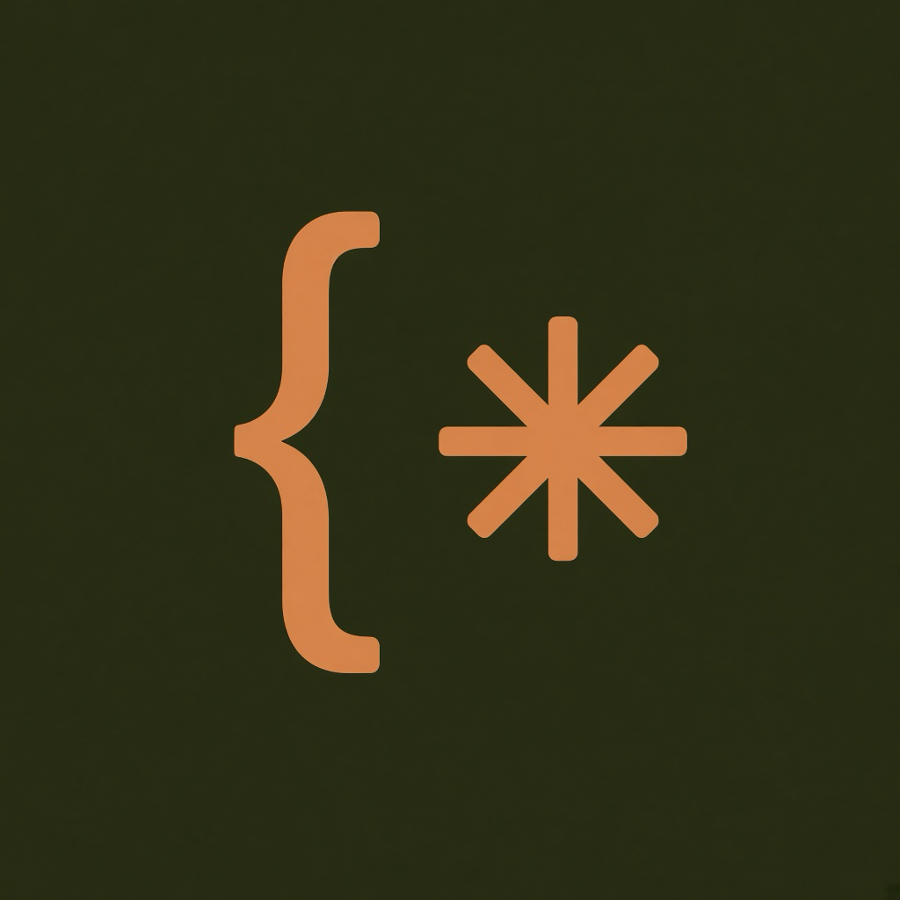

积木
字面量会自动转义。量词、捕获组、命名组、前瞻后顾和 Unicode 属性都放在左侧，悬停即可看到用途。

RegAIBuilder拖拽字符类、量词、分组和断言。右侧说明每个积木的用途。ZenMux 模型用 Markdown 和公式解释表达式，并能把生成的积木一键送到画布。
字面量会自动转义。量词、捕获组、命名组、前瞻后顾和 Unicode 属性都放在左侧，悬停即可看到用途。
每一行都可以标成应匹配或不该匹配。模型可以生成用例，再一键填进测试表。
设置页修改 Base URL 和模型名。API Key 只加密存在本机，界面只显示密文摘要。默认接入 zenmux.ai。